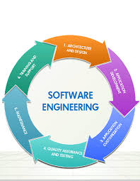

Software engineering From Wikipedia, the free encyclopedia A software engineer programming for the Wikimedia Foundation Software engineering (SWE) is the application of engineering to the development of software in a systematic method.[1][2][3]
 fWhen the first digital computers appeared in the early 1940s,[9] the instructions to make them operate were wired into the machine. Practitioners quickly realized that this design was not flexible and came up with the "stored program architecture" or von Neumann architecture. Thus the division between "hardware" and "software" began with abstraction being used to deal with the complexity of computing. Programming languages started to appear in the early 1950s[citation needed] and this was also another major step in abstraction. Major languages such as Fortran, ALGOL, and COBOL were released in the late 1950s to deal with scientific, algorithmic, and business problems respectively. Edsger W. Dijkstra wrote his seminal paper, "Go To Statement Considered Harmful",[10] in 1968 and David Parnas introduced the key concept of modularity and information hiding in 1972[11] to help programmers deal with the ever increasing complexity of software systems. The origins of the term "software engineering" have been attributed to different sources, but it was used in 1968 as a title for the World's first conference on software engineering, sponsored and facilitated by NATO. The conference was attended by international experts on software who agreed on defining best practices for software grounded in the application of engineering. The result of the conference is a report that defines how software should be developed. The original report is publicly available.[12] The discipline of software engineering was created to address poor quality of software, get projects exceeding time and budget under control, and ensure that software is built systematically, rigorously, measurably, on time, on budget, and within specification.[13] Engineering already addresses all these issues, hence the same principles used in engineering can be applied to software. The widespread lack of best practices for software at the time was perceived as a "software crisis".[14][15][16] Barry W. Boehm documented several key advances to the field in his 1981 book, 'Software Engineering Economics'.[17] These include his Constructive Cost Model (COCOMO), which relates software development effort for a program, in man-years T, to source lines of code (SLOC). {\displaystyle T=k*(SLOC)^{(1+x)}} T=k*(SLOC)^{(1+x)} The book analyzes sixty-three software projects and concludes the cost of fixing errors escalates as the project moves toward field use. The book also asserts that the key driver of software cost is the capability of the software development team. In 1984, the Software Engineering Institute (SEI) was established as a federally funded research and development center headquartered on the campus of Carnegie Mellon University in Pittsburgh, Pennsylvania, United States. Watts Humphrey founded the SEI Software Process Program, aimed at understanding and managing the software engineering process. His 1989 book, Managing the Software Process,[18] asserts that the Software Development Process can and should be controlled, measured, and improved. The Process Maturity Levels introduced would become the Capability Maturity Model Integration for Development(CMMi-DEV), which has defined how the US Government evaluates the abilities of a software development team. Modern, generally accepted best-practices for software engineering have been collected by the ISO/IEC JTC 1/SC 7 subcommittee and published as the Software Engineering Body of Knowledge (SWEBOK).[19] Subdisciplines[edit] Software engineering can be divided into 15[20] sub-disciplines. They are: Software requirements[1][20] (or Requirements engineering): The elicitation, analysis, specification, and validation of requirements for software. Software design:[1][20] The process of defining the architecture, components, interfaces, and other characteristics of a system or component. It is also defined as the result of that process. Software construction:[1][20] The detailed creation of working, meaningful software through a combination of coding, verification, unit testing, integration testing, and debugging. Software testing:[1][20] An empirical, technical investigation conducted to provide stakeholders with information about the quality of the product or service under test. Software maintenance:<[1][20] The totality of activities required to provide cost-effective support to software. Software configuration management:[1][20] The identification of the configuration of a system at distinct points in time for the purpose of systematically controlling changes to the configuration, and maintaining the integrity and traceability of the configuration throughout the system life cycle. Software engineering management:[1][20] The application of management activities—planning, coordinating, measuring, monitoring, controlling, and reporting—to ensure that the development and maintenance of software is systematic, disciplined, and quantified. Software development process:[1][20] The definition, implementation, assessment, measurement, management, change, and improvement of the software life cycle process itself. Software engineering models and methods[20] impose structure on software engineering with the goal of making that activity systematic, repeatable, and ultimately more success-oriented Software quality[20] Software engineering professional practice[20] is concerned with the knowledge, skills, and attitudes that software engineers must possess to practice software engineering in a professional, responsible, and ethical manner Software engineering economics[20] is about making decisions related to software engineering in a business context Computing foundations[20] Mathematical foundations[20] Engineering foundations[20] Education[edit] Knowledge of computer programming is a prerequisite for becoming a software engineer. In 2004 the IEEE Computer Society produced the SWEBOK, which has been published as ISO/IEC Technical Report 1979:2004, describing the body of knowledge that they recommend to be mastered by a graduate software engineer with four years of experience.[21] Many software engineers enter the profession by obtaining a university degree or training at a vocational school. One standard international curriculum for undergraduate software engineering degrees was defined by the CCSE, and updated in 2004.[22] A number of universities have Software Engineering degree programs; as of 2010, there were 244 Campus Bachelor of Software Engineering programs, 70 Online programs, 230 Masters-level programs, 41 Doctorate-level programs, and 69 Certificate-level programs in the United States.[23] For practitioners who wish to become proficient and recognized as professional software engineers, the IEEE offers two certifications that extend knowledge above the level achieved by an academic degree: Certified Software Development Associate and Certified Software Development Professional. In addition to university education, many companies sponsor internships for students wishing to pursue careers in information technology. These internships can introduce the student to interesting real-world tasks that typical software engineers encounter every day. Similar experience can be gained through military service in software engineering. Profession[edit] I have long believed that E.B. White’s abiding wisdom on children’s books — “Anyone who writes down to children is simply wasting his time. You have to write up, not down.” — is equally true of science books. The question of what makes a great book of any kind is, of course, a slippery one, but I recently endeavored to synthesize my intuitive system for assessing science books that write up to the reader in a taxonomy of explanation, elucidation, and enchantment. One of Wittmann’s most pause-giving points has to do with how temporality mediates the mind-body problem. He writes: Presence means becoming aware of a physical and psychic self that is temporally extended. To be self-conscious is to recognize oneself as something that persists through time and is embodied. In a sense, time is a construction of our consciousness. Two generations after Hannah Arendt observed in her brilliant meditation on time that “it is the insertion of man with his limited life span that transforms the continuously flowing stream of sheer change … into time as we know it,” Wittmann writes: Self-consciousness — achieving awareness of one’s own self — emerges on the basis of temporally enduring perception of bodily states that are tied to neural activity in the brain’s insular lobe. The self and time prove to be especially present in boredom. They go missing in the hustle and bustle of everyday life, which results from the acceleration of social processes. Through mindfulness and emotional control, the tempo of life that we experience can be reduced, and we can regain time for ourselves and others. Perception necessarily encompasses the individual who is doing the perceiving. It is I who perceives. This might seem self-evident. Perception of myself, my ego, occurs naturally when I consider myself. I “feel” and think about myself. But who is the subject if I am the object of my own attention? When I observe myself, after all, I become the object of observation. Clearly, this intangibility of the subject as a subject — and not an object — poses a philosophical problem: as soon as I observe myself, I have already become the object of my observation. More here. WHEN BREATH BECOMES AIR All life is lived in the shadow of its own finitude, of which we are always aware —